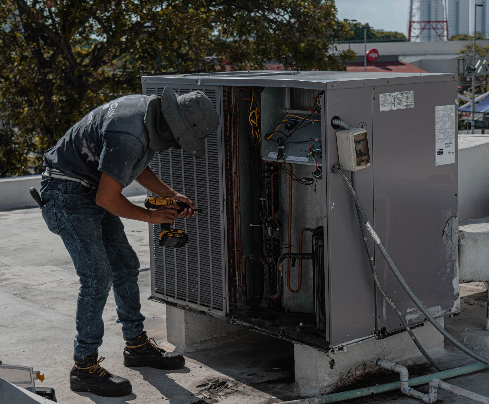
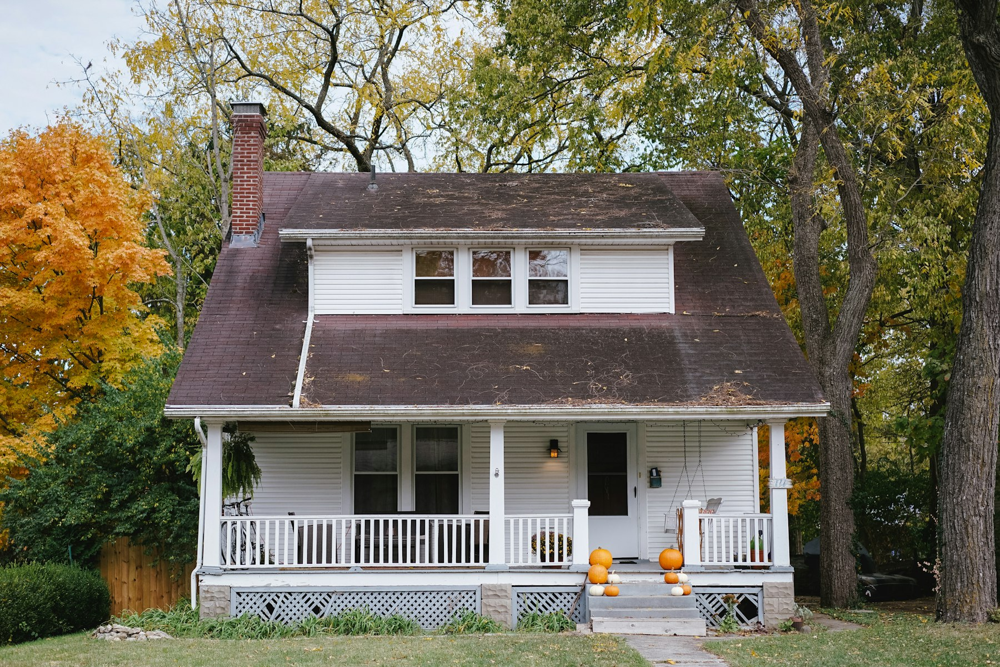
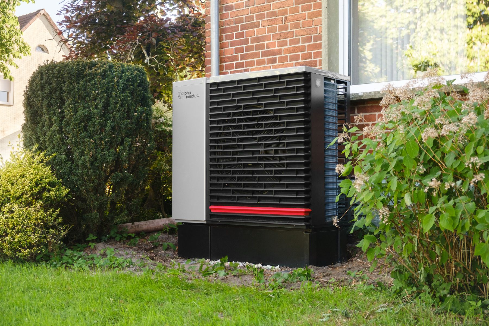

Services
Heating and cooling work for homes across the Monongalia, Marion, and Harrison County area.
Winters here get cold and summers get humid. Most calls are for no heat, weak cooling, or a system that is ready to be replaced. Tell the technician what you are seeing and they can talk through the next step.

AC repair
Help when the air conditioner will not cool, the outdoor unit ices up, or airflow feels weak in the house.
AC repair in this area
Furnace repair
Service for furnaces that will not start, cycle on and off, or blow air that never quite gets warm.
Furnace repair details
Heat pumps
Repair, service, and installation of heat pumps for homes that heat and cool with one system.
Heat pump service
HVAC installation
Quotes for a new furnace, air conditioner, or complete system when the current equipment is at the end of its life.
Installation details